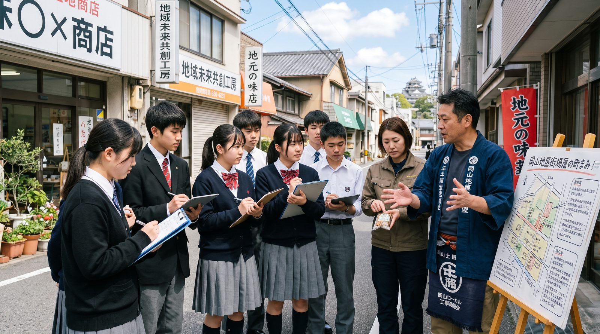
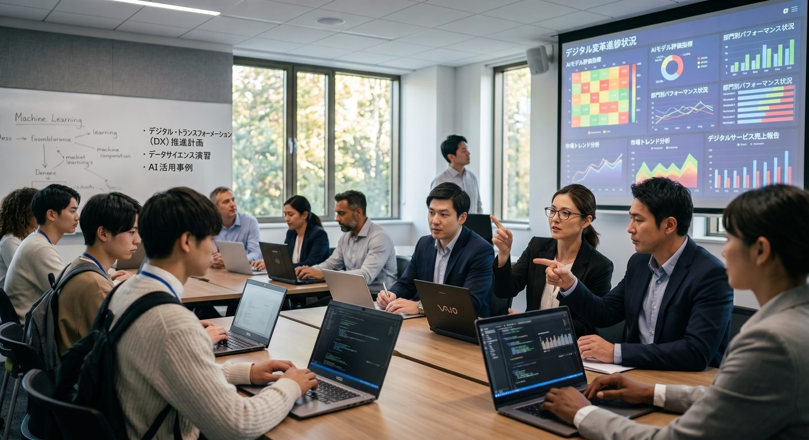

4つの取組
高校から社会人まで、挑戦が途切れない仕組みをつくる。
令和8〜10年度の補助事業期間で実施する、4つの柱です。

高校改革と連動した大学改革
N-E.X.Tハイスクール改革先導拠点校（例：東岡山工業高校、操山高校）へ大学教員・学生メンターを派遣。拠点校での大学授業受講を、正規単位・AP（先取り履修）として認定する仕組みを整えます。
高度DX・GX・AX人材とアントレプレナーの輩出
「アントレクエスト」等の探究型プログラムで起業家教育を高度化。OI-Start内にAI利活用・ロボティクス・フードテック（GX）・サイバーセキュリティ・看護保育（AEW）の新設WGを立ち上げ、実企業の課題を題材にしたPBLを、正課外→単位化→正課化→連携開設科目の4段階で制度化します。
人材需給ギャップの可視化とリスキリング
岡山大学で試作中の人材需給ギャップダッシュボード（v0.6）は、岡山労働局・e-Statの公表データを接続し稼働中。県立大学「ハレリカ」と連携し、AI駆動開発・看護DX・AX・フードテック・スマートファクトリー・データサイエンス等のリスキリング科目を展開します。
「育成」と「活用」を直結する完全自走化モデル
岡山大学研究協力会（約90社）とOI-Start（150社超）をOLIVEへ統合し、法人向け有料会員制度へ移行。①超広域リクルート支援（逆求人スカウト）②デジタルサイネージ広告（岡大ピーチユニオンに100インチ設置済）③PR動画制作・リクルートイベント（YouTube「@okabiz_channel」で実施中）の3本柱で、補助金に依存しない運営を確立します。

学生と社会人が、同じ教室に
学び直しは、学生だけのものではない。
2040年に不足するのは、AI・ロボットを使いこなす人材です。県立大学「ハレリカ」等と連携した階層別リスキリングでは、経営層から現場層まで、そして学生と社会人が同じ課題に向き合います。人材需給ギャップダッシュボードが示す「いま足りない力」が、そのままカリキュラムになります。
※ 本画像は活動のイメージです。